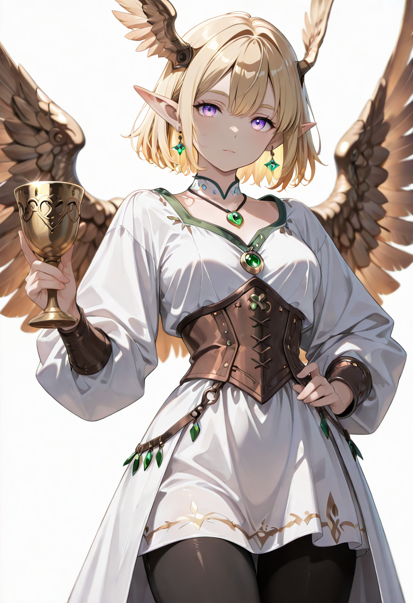
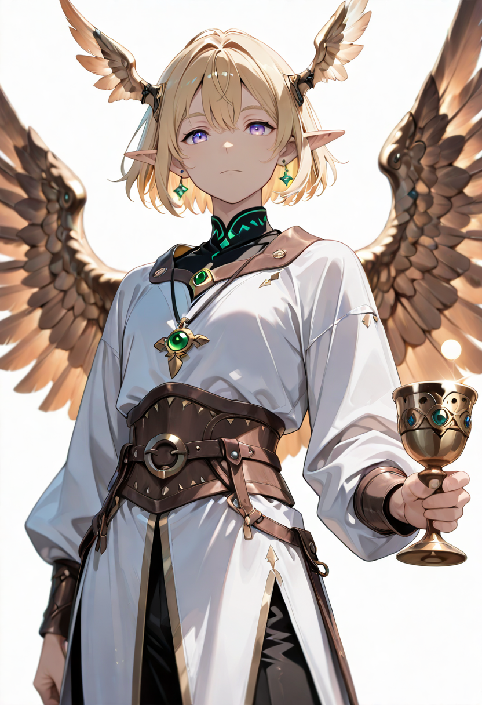
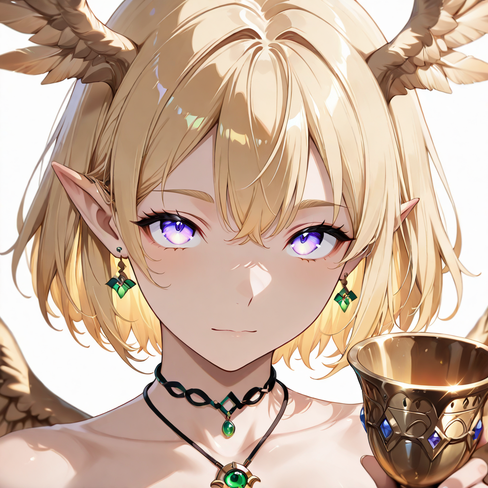

The Living Covenant
An Emissary is what happens when a Linfa soul fully integrates all dichotomies and stops experiencing them as tension. She is simultaneously Malicott's most complete manifestation and the most individually present unit in the entire Shadows of the Sap branch. Where lesser units are still becoming, the Emissary has arrived , not at transcendence, but at perfect function.
She negotiates between life and death the way an experienced diplomat negotiates between two states that have been at war for a century: with total familiarity with both positions, zero illusions about either, and an absolute refusal to let the impasse continue. She does not mourn the fallen. She retrieves them and brings them back to work.
Her voice carries the specific timbre of sap-harmonics , each word is simultaneously spoken and felt as a vibration in the bones. Enemies who have heard her speak describe it as hearing the forest itself issue a sentence. Allies describe it differently: they say it sounds like someone who genuinely believes that the outcome is not in question. Only the timeline.
Tactical Data
Linfa Champion , once per formation
Voice of Malicott
BaseDiplomatic Immunity
ActiveLife Pact
Ultimate , Once per BattleGallery
